ISO-Erstellen
Hinweis
Cubic funktioniert ausschließlich unter Debian und Ubuntu basierten Distributionen.
Cubic installieren
Terminal mit STR+ALT+T öffnen
und folgendes eingeben:
Projekt erstellen/auswählen
Die gewünschte Linux ISO von offizieller Linux Mint Website downloaden.
Cubic durch öffnen über System-Suche starten oder via Terminal durch eingeben von cubic.
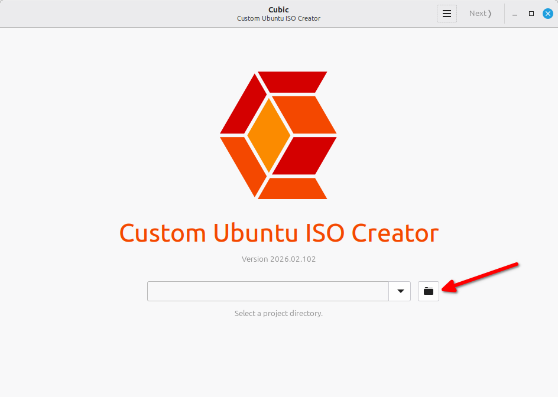
Auf den Ordner-Button klicken.
Falls schon ein Projekt-Ordner existiert kann dessen Pfad auch einfach eingetragen werden.
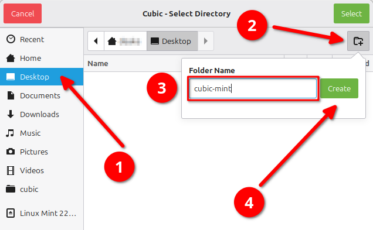
Zuerst links auf
Desktop klicken, als nächstes auf das Ordner-Symbol mit dem + klicken, nun noch einen Project-Namen eingeben und abschließend auf Create klicken.
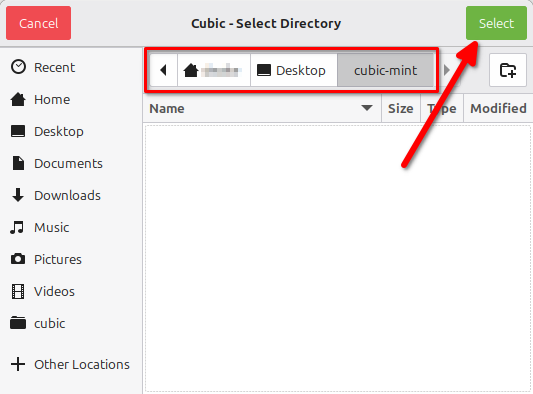
In Projekt-Ordner (in diesem Fall
cubic-mint) navigieren und dann oben rechts auf Select klicken.
Cubic Oberfläche durchlaufen
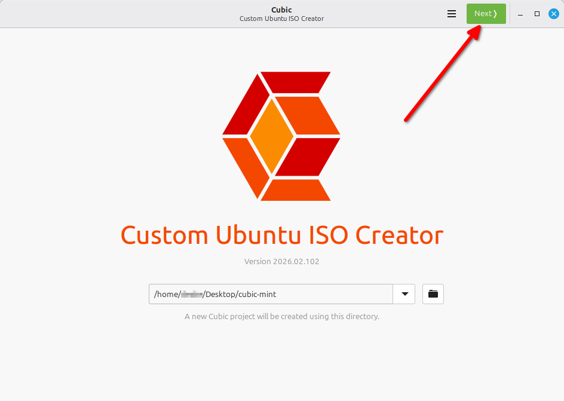
Anschließend oben rechts auf
Next klicken.
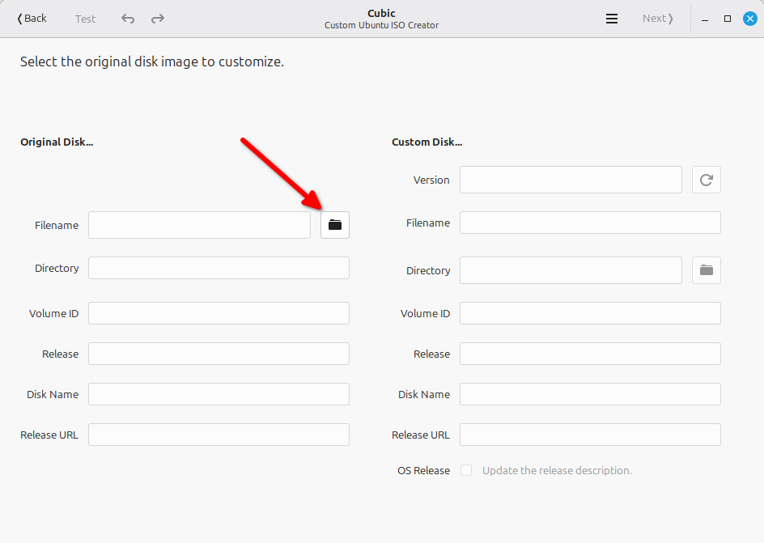
Auf den Ordner-Button klicken.
Sollte ein Projekt-Ordner ausgewählt worden sein, der schon einmal bearbeitet wurde, dann sind diese Informationen ggf. schon ausgefüllt und somit kann das Auswählen der ISO in diesem Fall einfach übersprungen werden.
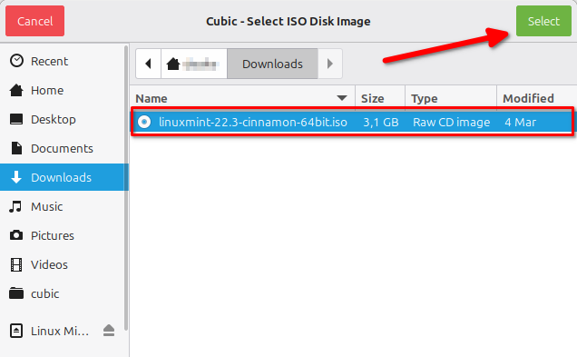
Im
Downloads-Ordner (oder an dem entsprechenden Ort wo sie hin gespeichert wurde) nach der ISO suchen, diese auswählen und oben rechts auf Select klicken.
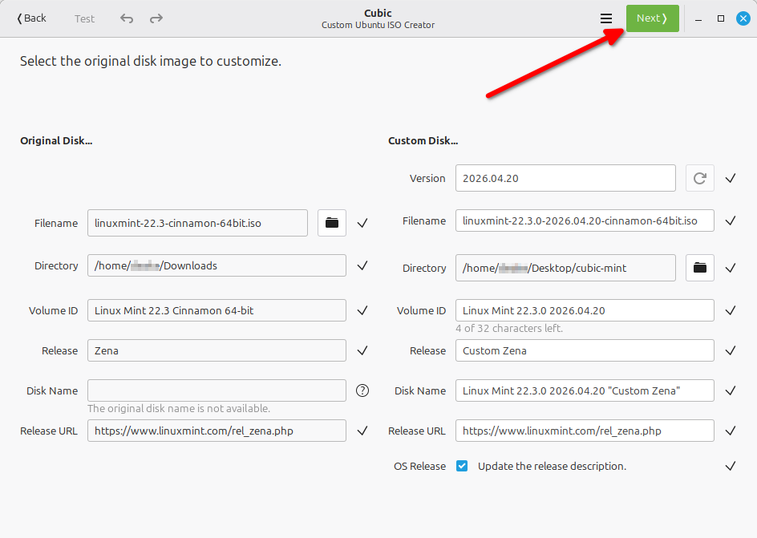
Ggf. Informationen anpassen, ansonsten oben rechts auf
Next klicken.
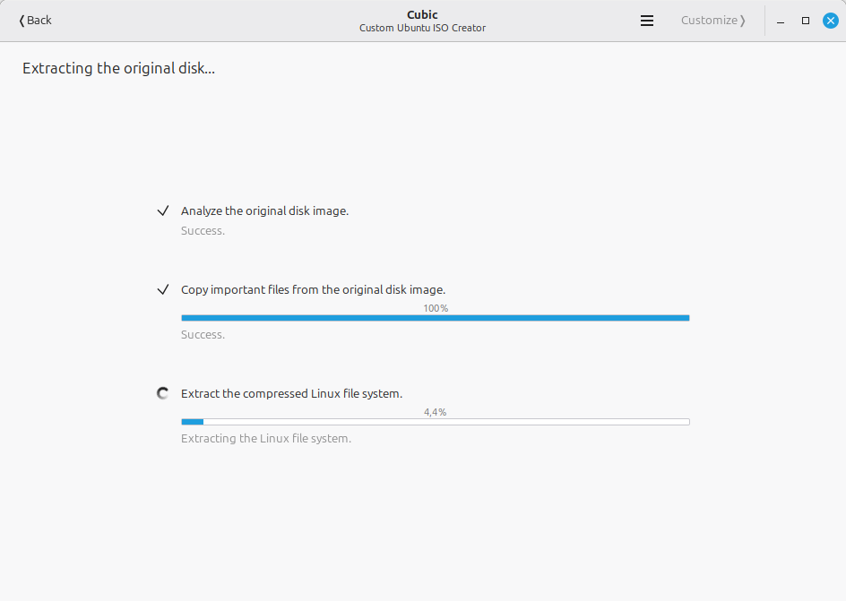
Abwarten und nichts tun, springt automatisch weiter.
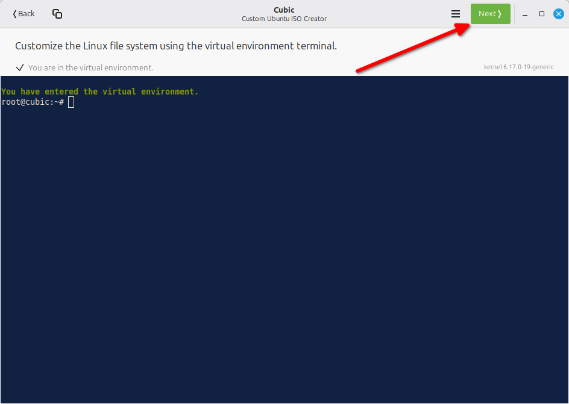
Sobald es auftaucht alle gewünschten Änderungen vornehmen.
Erstellung abschließen
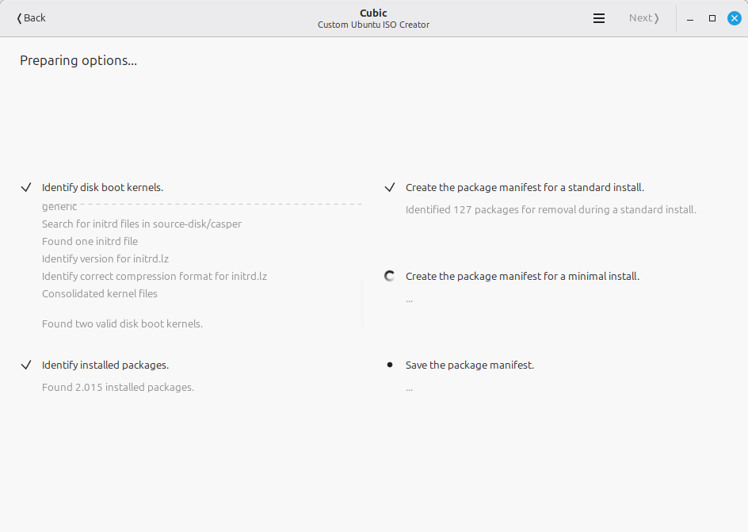
Abwarten und nichts tun, springt automatisch weiter.
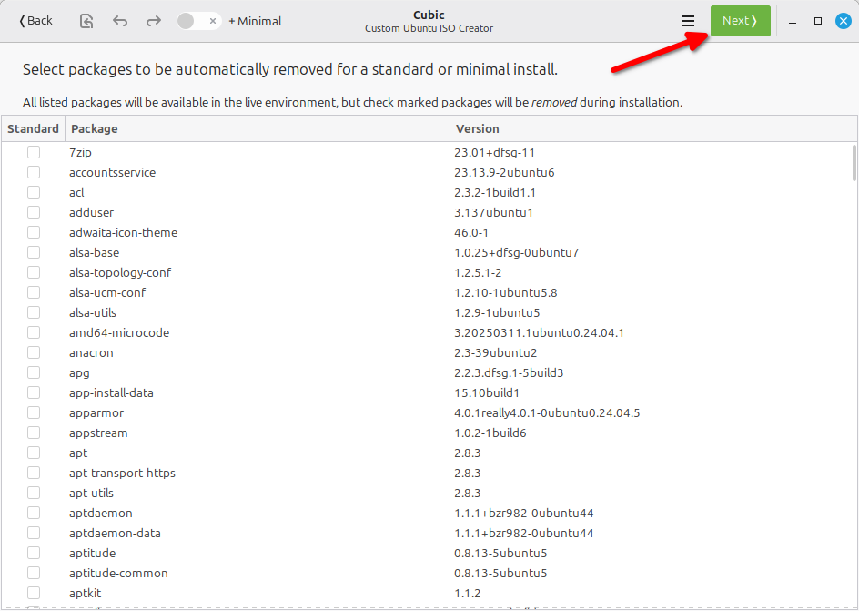
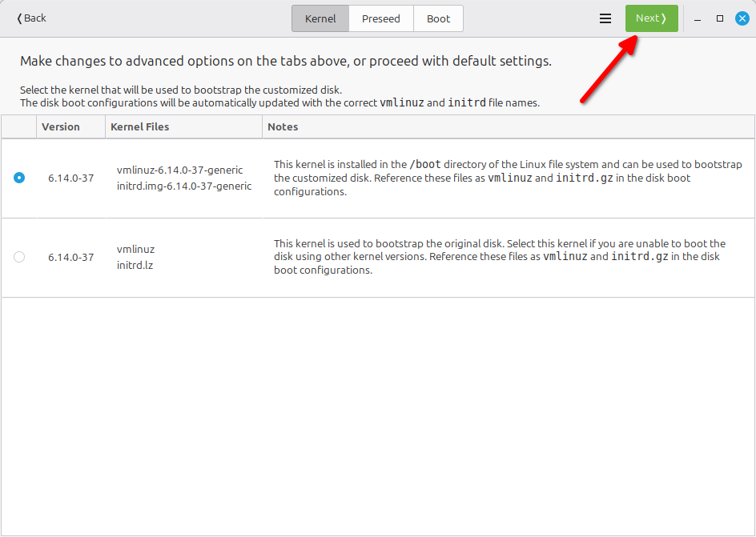
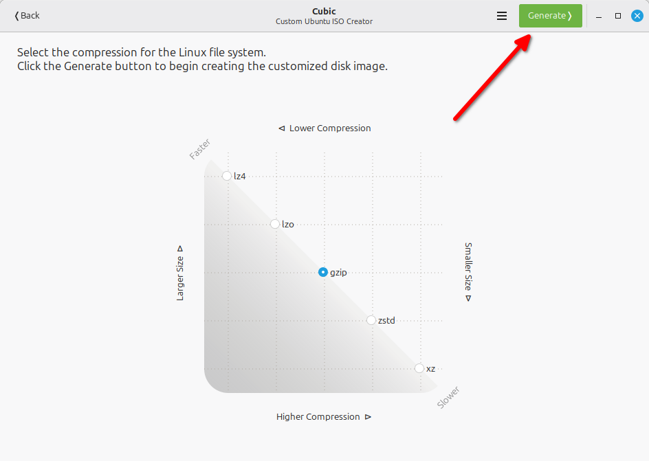
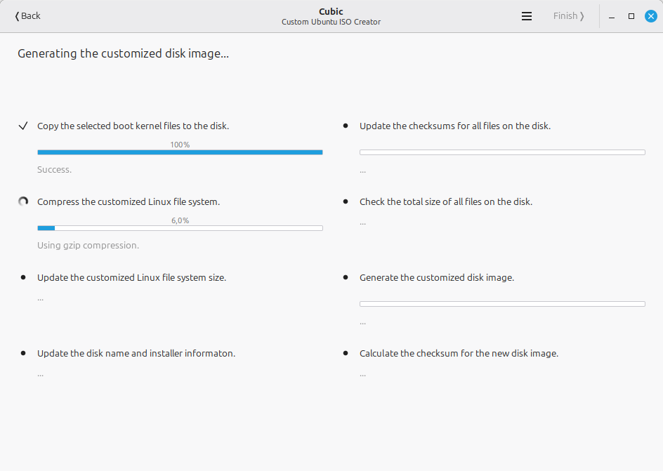
Abwarten und nichts tun, springt automatisch weiter.
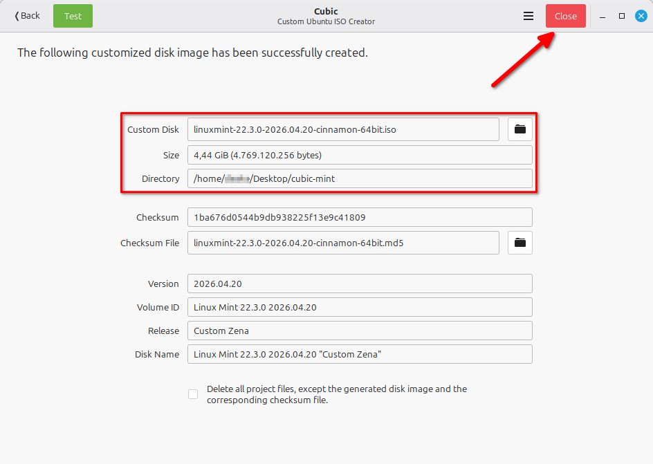
Auf dieses Fenster warten.